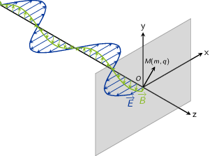
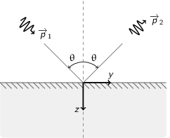

TD2 : Équations de Maxwell dans le vide et champ électromagnétique
1 "Propriétés mécaniques" du champ électromagnétique
- Énergie
- Force de Lorentz : \(\vv{F}=q\vv{E}+q\vv{v}\times\vv{B}\)
Équations de Maxwell :
Maxwell-Gauss \(\div\vv{E}=\vv{\nabla}.\vv{E}=\tfrac{\rho}{\epsilon_0}\) Conservation du flux magnétique \(\div\vv{B}=\vv{\nabla}.\vv{B}=0\) Maxwell-Faraday \(\rot\vv{E}=-\tfrac{\partial\vv{B}}{\partial t}\) Maxwell-Ampère \(\rot\vv{B}=\mu_0\vv{j}+\mu_0\epsilon_0\tfrac{\partial\vv{E}}{\partial t}\) - Équation locale de conservation de la charge
\begin{align*}
\div\left(\rot\vv{B}\right)=\vv{\nabla}.\left(\vv{\nabla}\times\vv{B}\right)&=0\\
\mu_0\div\vv{j}+\mu_0\epsilon_0\frac{\partial}{\partial t}\div\vv{E}&=0\\
\div\vv{j}+\frac{\partial\rho}{\partial t}=0
\end{align*}
Remarques :
- En régime stationnaire, \(\div\vv{j}=0\) i.e. champ à flux conservatif, on retrouve la loi des n\oe uds de Kirchhoff à savoir que l'intensité du courant \(i_1=i_2+i_3\)
- Dans le conducteur, la densité de courant \(\vv{j}\) s'exprime en fonction
du champ \(\vv{E}\) et de la conductivité \(\gamma\) (exprimée en Siemens
par mètre) : \(\vv{j}=\gamma\vv{E}\) d'où
\begin{align*}
\frac{\partial\rho}{\partial t}+\frac{\gamma}{\epsilon_0}\rho=0\text{ et }\rho(t)=\rho_0\,e^{-t/\tau}\text{ où }\tau=\frac{\epsilon_0}{\gamma}\sim\frac{10^{-11}}{10^7}\sim\unit[10^{-18}]{s}
\end{align*}
Dans un conducteur, il n'y a donc pas de charge en volume : le courant et donc les charges se déplaçent en surface.
- La puissance \(\mathcal{P}\) s'écrit comme le produit de la force \(\vv{F}\) par la
vitesse de la particule \(\vv{v}\) :
\begin{equation*}
\mathcal{P}=\vv{F}.\vv{v}=q\vv{E}.\vv{v}+q(\vv{v}\times\vv{B}).\vv{v}=q\vv{E}.\vv{v}
\end{equation*}
La puissance par unité de volume \(\tfrac{d\mathcal{P}}{d\tau}=nq\vv{E}.\vv{v}\) or \(\vv{j}=nq\vv{v}\) d'où \(\tfrac{d\mathcal{P}}{d\tau}=\vv{j}.\vv{E}\)
- \(\vv{R}=\tfrac{\vv{E}\times\vv{B}}{\mu_0}\) et \(u=\tfrac{\epsilon_0E^2}{2}+\tfrac{B^2}{2\mu_0}\) \begin{align*} \div\vv{R}&=\frac{1}{\mu_0}\div\left(\vv{E}\times\vv{B}\right)\text{ avec }\div\left(\vv{a}\times\vv{b}\right)=\vv{b}.\rot\vv{a}-\vv{a}.\rot\vv{b}\\ &=\frac{1}{\mu_0}\left(\vv{B}.\rot\vv{E}-\vv{E}.\rot\vv{B}\right)\\ &=\frac{1}{\mu_0}\left(-\vv{B}.\frac{\partial\vv{B}}{\partial t}-\vv{E}.\left(\mu_0\vv{j}+\mu_0\epsilon_0\frac{\partial\vv{E}}{\partial t}\right)\right)\\ &=\frac{1}{\mu_0}\left(-\frac{1}{2}\frac{\partial B^2}{\partial t}-\frac{\mu_0\epsilon_0}{2}\frac{\partial E^2}{\partial t}-\mu_0\vv{j}.\vv{E}\right)\\ &=-\frac{\partial u}{\partial t}-\vv{j}.\vv{E} \end{align*} \begin{align*} \div\vv{R}+\frac{\partial u}{\partial t}+\vv{j}.\vv{E}=0 \end{align*}
- \(\vv{E}=\vv{E}_0\cos\omega t\), \(\vv{B}=\vv{B_0}\sin\omega t\)
\begin{align*}
\iiint_V\div\vv{R}d\tau+\iiint_V\frac{\partial u}{\partial t}d\tau+\iiint_V\vv{j}.\vv{E}d\tau=0\\
\iiint_V\div\vv{R}d\tau+\iiint_V\frac{\partial u}{\partial t}d\tau+\underbrace{\iiint_V\frac{d\mathcal{P}}{d\tau}d\tau}_{\mathcal{P}_{\text{EM}\rightarrow\,q}}=0\\
\end{align*}
En appliquant le théorème d'Ostrogradsky \(\varoiint_S\vv{a}.d\vv{S}=\iiint_V\div\vv{a}d\tau\), on obtient
\begin{align*} \varoiint_S\vv{R}.d\vv{S}+\iiint_V\frac{\partial u}{\partial t}d\tau+\mathcal{P}_{\text{EM}\rightarrow\,q}=0 \end{align*}La puissance moyenne sortant de la surface fermée1 devient
1\begin{align*} \left\langle\varoiint_S\vv{R}.d\vv{S}\right\rangle_T+\left\langle\iiint_V\frac{\partial u}{\partial t}d\tau\right\rangle_T+\left\langle\mathcal{P}_{\text{EM}\rightarrow\,q}\right\rangle_T=0\\ \left\langle\mathcal{P}_\text{sortant}\right\rangle_T+\iiint_V\left\langle\frac{\partial u}{\partial t}d\tau\right\rangle_T+\left\langle\mathcal{P}_{\text{EM}\rightarrow\,q}\right\rangle_T=0 \end{align*}il s'agit de la puissance sortant d'une surface fermée qui correspond au différentiel entre la puissance ayant pénétrée dans le volume et la puissance sortant de ce volume.
Or
\begin{align*} \frac{\partial u}{\partial t}&=\frac{\epsilon_0E_0^2}{2}\times2\cos\omega t\sin\omega t+\frac{B_0^2}{2\mu_0}\times2\cos\omega t\sin\omega t\\ \left\langle\frac{\partial u}{\partial t}\right\rangle_T&=\epsilon_0E_0^2\left\langle\sin2\omega t\right\rangle_T+\frac{1}{\mu_0}B_0^2\left\langle\sin2\omega t\right\rangle_T\\ \left\langle\frac{\partial u}{\partial t}\right\rangle_T&=0 \end{align*}soit
\begin{align*} \left\langle\mathcal{P}_\text{sortant}\right\rangle_T+\left\langle\mathcal{P}_{\text{EM}\rightarrow\,q}\right\rangle_T=0\\ \left\langle\mathcal{P}_\text{entrant}\right\rangle_T=\left\langle\mathcal{P}_{\text{EM}\rightarrow\,q}\right\rangle_T \end{align*}
- Force de Lorentz : \(\vv{F}=q\vv{E}+q\vv{v}\times\vv{B}\)
- Impulsion

Onde plane progressive \(\vv{B}=\tfrac{\vv{u}_z\times\vv{E}}{c}\)
- Calcul de la puissance \(\mathcal{P}\) \begin{align*} \mathcal{P}&=\frac{dW}{dt}\text{ avec }\mathcal{P}=q\vv{E}.\vv{v}\\ W&=\int_0^Tq\vv{E}.\vv{v}dt \end{align*}
- La variation d'impulsion \(\vv{p}\) par unité de temps induite par le
passage de l'onde EM est égale à la force de Lorentz \(\vv{F}\)
\begin{align*}
\frac{d\vv{p}}{dt}=\vv{F}
\end{align*}
d'où
\begin{align*} \vv{p}&=\int_0^T\vv{F}dt=\int_0^Tq\left(\vv{E}+\vv{v}\times\vv{B}\right)dt\\ &=\int_0^Tq\vv{E}dt+\int_0^Tq\vv{v}\times\left(\frac{\vv{u}_z\times\vv{E}}{c}\right)dt \end{align*}La première intégrale est nulle car \(\vv{E}=\vv{E}_0\cos\omega t\). Pour déterminer l'expression de la seconde intégrale, on utilise la formule ci-dessous
\begin{align*} \vv{a}\times\left(\vv{b}\times\vv{c}\right)=\left(\vv{a}.\vv{c}\right)\vv{b}-\left(\vv{a}.\vv{b}\right)\vv{c} \end{align*}L'impulsion \(\vv{p}\) devient
\begin{align*} \vv{p}&=\int_0^T\frac{q}{c}\left(\vv{v}.\vv{E}\right)\vv{u}_z\,dt-\int_0^T\frac{q}{c}\left(\vv{v}.\vv{u}_z\right)\vv{E}dt \end{align*}or \(\vv{v}.\vv{u}_z=0\) car la particule est maintenue dans le plan \(z=0\). L'expression de l'impulsion se réduit donc
\begin{align*} \vv{p}=\int_0^T\frac{q}{c}\left(\vv{v}.\vv{E}\right)\vv{u}_z\,dt=\frac{W}{c}\vv{u}_z \end{align*} - L'énergie d'un photon \(E=h\nu=\tfrac{hc}{\lambda}\) est égale à \(pc\) via la relation de de Broglie reliant onde et matière \(\lambda=\tfrac{h}{p}\)
- Moment cinétique \(\vv{\sigma}_O=\vv{r}\times\vv{p}=\vv{OM}\times\vv{p}\) et
\(\sigma_z=\vv{\sigma}_O.\vv{u}_z\)
- \([\sigma_z]=[L]\times[M][L][T^{-1}]=[M]\times[L^2]\times[T^{-1}]\) et \([W]=[M][L^2][T^{-2}]\) d'où \begin{align*} [W]&=\frac{[\sigma_z]}{[T]}\\ W&=k\frac{\sigma_z}{T} \end{align*}
- \(\vv{p}=\tfrac{W}{c}\vv{u}_z\) \begin{align*} \vv{\sigma}_O&=\vv{OM}\times\vv{p}=\vv{OM}\times\frac{W}{c}\vv{u}_z\\ \vv{\sigma}_A&=\vv{AM}\times\vv{p}=\underbrace{\vv{AO}}_{\parallel\vv{u}_z}\times\frac{W}{c}\vv{u}_z+\vv{OM}\times\frac{W}{c}\vv{u}_z\\ &=\vv{\sigma}_O=\vv{\sigma} \end{align*}
- Expression de \(\sigma_z\) 2
\begin{align*}
\vv{\sigma}&=\vv{OM}\times\vv{p}\text{ or }\frac{d\vv{p}}{dt}=\vv{F}_\text{Lorentz}=q\vv{E}+q\vv{v}\times\vv{B}\\
d\vv{\sigma}&=\vv{OM}\times d\vv{p}\\
d\sigma_z&=d\vv{\sigma}.\vv{u}_z\\
\sigma_z&=\left[\underbrace{\int_0^T\vv{OM}\times q\vv{E}dt}_{\text{\(\unicode{x2460}\)}}+\underbrace{\int_0^T\vv{OM}\times q(\vv{v}\times\vv{B})dt}_{\text{\(\unicode{x2461}\)}}\right].\vv{u}_z
\end{align*}
Calcul de \(\unicode{x2460}\)
2\begin{align*} \text{\(\unicode{x2460}\)}&=q\int_0^T\left(\vv{OM}\times\vv{E}\right).\vv{u}_z\,dt\\ &=q\int_0^T\left(\vv{E}\times\vv{u}_z\right).\vv{OM}\,dt\\ &=-q\int_0^T\vv{OM}.\left(\vv{u}_z\times\vv{E}(M,t)\right)\,dt \end{align*}les forces extérieures \(\vv{F}_\text{ext.}\) ont pour objectif de maintenir la particule dans le plan \(z=0\). Elles sont donc soit comprises dans le plan \((xOy)\) soit opposées vectoriellement \(\Upsigma\vv{F}=\vv{0}\). Le moment cinétique induit par ces forces est donc nul du fait de \(\vv{OM}\times\vv{F}_\text{ext.}=\vv{0}\)
or \(\vv{E}(M,t)=\vv{E}(O,t)\) car l'onde EM est plane et le calcul se fait en \(z=0\)
Calcul de \(\unicode{x2461}\)
\begin{align*} \text{\(\unicode{x2461}\)}&=q\int_0^T\vv{OM}\times\left(\vv{v}\times\vv{B}\right).\vv{u}_zdt \end{align*}or
\begin{align*} \vv{a}\times\left(\vv{b}\times\vv{c}\right)=\left(\vv{a}.\vv{c}\right).\vv{b}-\left(\vv{a}.\vv{b}\right).\vv{c} \end{align*} \begin{align*} \text{\(\unicode{x2461}\)}&=q\left[\int_0^T\left(\vv{OM}.\vv{B}\right).\underbrace{\vv{v}.\vv{u}_z}_{\vv{v}\perp\vv{u}_z=0}dt-\int_0^T\left(\vv{OM}.\vv{v}\right).\underbrace{\vv{B}.\vv{u}_z}_{\vv{B}\perp\vv{u}_z=0}dt\right] \end{align*}Seul le champ électrique \(\vv{E}\) de l'onde EM contribue au moment cinétique cédé à la particule \(q\)
\begin{align*} \sigma_z=-q\int_0^T\vv{OM}.\left(\vv{u}_z\times\vv{E}(O,t)\right)dt \end{align*} - Polarisation circulaire gauche
\begin{align*}
\vv{E}(O,t)=
\begin{pmatrix}
E_0\cos\omega t\\E_0\sin\omega t\\0
\end{pmatrix}
\end{align*}
\begin{align*}
\frac{d\vv{E}(O,t)}{dt}=
\begin{pmatrix}
-E_0\omega\sin\omega t\\E_0\omega\cos\omega t\\0
\end{pmatrix}
\end{align*}
\begin{align*}
\vv{u}_z\times\vv{E}(O,t)=
\begin{pmatrix}
0\\0\\1
\end{pmatrix}
\times
\begin{pmatrix}
E_0\cos\omega t\\E_0\sin\omega t\\0
\end{pmatrix}
=
\begin{pmatrix}
-E_0\sin\omega t\\E_0\cos\omega t\\0
\end{pmatrix}
=\frac{1}{\omega}\,\frac{d\vv{E}(O,t)}{dt}
\end{align*}
d'où
\begin{align*} \sigma_z=-\frac{q}{\omega}\int_0^T\vv{OM}.\frac{d\vv{E}(O,t)}{dt}dt \end{align*}En intégrant par partie i.e. \((uv)'=u' v+v' u\rightarrow\int u' v=[uv]-\int v' u\)
\begin{align*} \sigma_z&=-\frac{q}{\omega}\left[\underbrace{\left[\vv{OM}.\vv{E}\right]_0^T}_{\vv{E}(O,0)=\vv{E}(O,T)}-\int_0^T\frac{d\vv{OM}}{dt}.\vv{E}(O,t)dt\right]\\ &=\frac{q}{\omega}\int_0^T\vv{v}.\vv{E}(O,t)\,dt=\frac{W}{\omega} \end{align*}\(\omega=\tfrac{2\pi}{T}\) d'où \(W=2\pi\frac{\sigma_z}{T}=\hbar\omega\) soit \(\sigma_z=+\hbar\). Sur une période \(T\), le champ EM cède à la particule \(q\), un moment cinétique égal à \(+\hbar\)
- Le moment cinétique de photons polarisé circulairement droite est alors \(-\hbar\), et \(\sigma_z=0\) pour une polarisation rectiligne (rectiligne ≡ circulaire droite + circulaire gauche)
2 Interprétation corpusculaire de la pression de radiation

- Onde plane monochromatique :
\(\vv{B}=\frac{\vv{k}\times\vv{E}}{\omega}=\frac{\vv{u_k}\times\vv{E}}{c}=\frac{E}{c}\vv{u}_B\). La
densité volumique d'énergie électromagnétique \(u\) est égale à
\begin{align*}
u&=\frac{\epsilon_0E^2}{2}+\frac{B^2}{2\mu_0}\\
u&=\frac{\epsilon_0E^2}{2}+\frac{E^2}{2\mu_0c^2}\\
u&=\epsilon_0E^2\\
\left\langle u\right\rangle_T&=\left\langle\epsilon_0E_0^2\cos^2\left(\vv{k}.\vv{r}-\omega t\right)\right\rangle_T\\
\left\langle u\right\rangle_T&=\frac{\epsilon_0E_0^2}{2}
\end{align*}
L'intensité \(I\) est par définition la puissance moyenne par unité de surface \(S\) 3
3\begin{align*} I&=\frac{P_W}{S}=\frac{dE}{Sdt}\text{ où }\\ dE&=\langle u\rangle\times S\times c\times dt\\ I&=\frac{\langle u\rangle\times Scdt}{Sdt}=\langle u\rangle\times c \end{align*}l'intensité \(I\) est également égale au vecteur de Poynting moyen \(I=\|\langle\vv{R}\rangle\|\) avec \(\vv{R}=\frac{\vv{E}\times\vv{B}}{\mu_0}\) et \(\vv{B}=\frac{\vv{k}\times\vv{E}}{\omega}\)
- Calcul de la densité \(N\) de photons dans le faisceau \begin{align*} \langle u\rangle&=N\times E=N\times \frac{hc}{\lambda}\\ \frac{I}{c}&=N\times \frac{hc}{\lambda}\\ N&=\frac{I\lambda}{hc^2}=\frac{9\,10^4\times5.15\,10^{-7}}{6.62\,10^{-34}\times(3\,10^8)^2}=\unit[7.8\,10^{14}]{photons/m^3} \end{align*}
- Choc élastique \(E_1=E_2\) d'où \(p_1c=p_2c\rightarrow p_1=p_2=p\). La conservation de l'impulsion \begin{align*} \vv{p}_1&=\vv{p}_2+\Updelta\vv{p}_0\\ \Updelta\vv{p_0}&=\vv{p}_1 - \vv{p}_2=2p\cos\theta\vv{u}_z\\ \|\Updelta\vv{p}_0\|&=\frac{2h}{\lambda}\cos\theta=\frac{2\times6.62\,10^{-34}}{5.15\,10^{-7}}\frac{\sqrt3}{2}=\unit[2.08\,10^{-27}]{kg.m.s^{-1}} \end{align*}
- \begin{align*} x&=\frac{N\times V_\text{cylindre}}{S_\text{projetée}\times dt}\text{ où }S_\text{projetée}=S_\text{cylindre}/\cos\theta\\ &=\frac{N\times S_\text{cylindre}\times\cos\theta cdt}{S_\text{cylindre}\times dt}\\ &=Nc\cos\theta=\frac{I\lambda}{hc}\cos\theta\\ &=\frac{9\,10^4\times5.15\,10^{-7}}{6.62\,10^{-34}\times3\,10^8}\cos 30=\unit[2\,10^{23}]{photon.m^{-2}.s^{-1}} \end{align*}
- \begin{align*}
P&=\frac{d\vv{p}}{Sdt}=x\cdot\Updelta p_0\\
&=\frac{I\lambda}{hc}\cos\theta\times\frac{2h}{\lambda}\cos\theta\\
&=\frac{2I\cos^2\theta}{c}=\frac{2\times9\,10^4\times\cos^230}{3\,10^8}=\unit[4.5\,10^{-4}]{N/m^2}\\
&\text{ avec }I=\frac{\epsilon_0E_0^2c}{2}, P=\epsilon_0E_0^2\cos^2\theta
\end{align*}
Application expérimentale: La pression de radiation aussi faible soit elle, est un bruit important pour les interféromètres de haute sensibilité tels que Virgo (cf. http://tel.archives-ouvertes.fr/tel-00175254/en/).